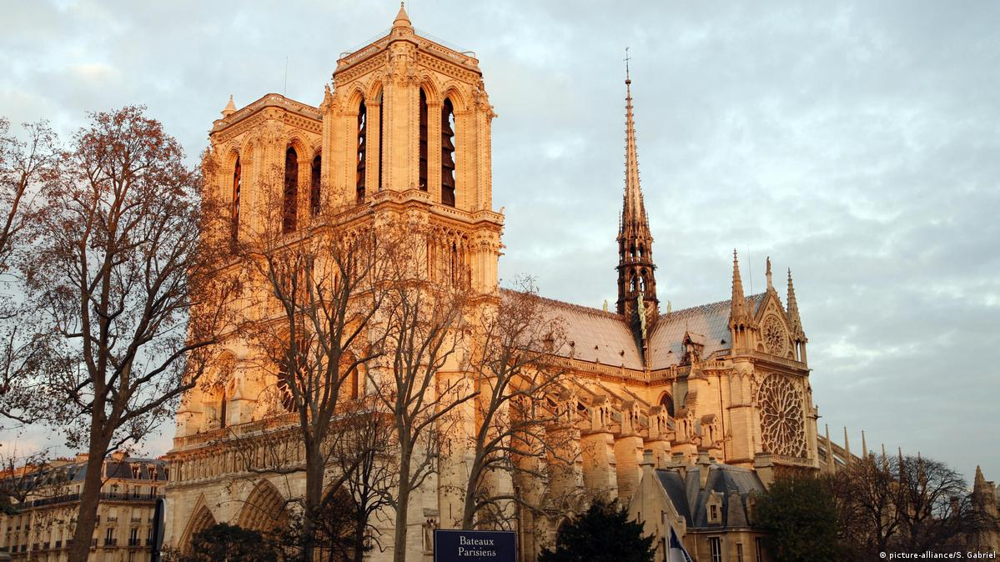

Catedral de Notre Dame, Paris, França
Rodeada pelas águas do Rio Sena, no coração de Paris, a Catedral de Notre Dame é uma obra-prima da arquitetura gótica que impressiona milhões de turistas anualmente, tanto pela sua beleza exterior quanto interior. A igreja foi construída ao longo de quase duzentos anos, sendo completada em 1345.
Disneyland Paris, Marne-la-Valée, França

Quando o primeiro parque da Disney da Europa foi inaugurado, em 1992, muitos franceses reclamaram desta “invasão americana”. Hoje, o Disneyland Paris, situado na verdade em Marne-la-Vallée, a cerca 30 km da capital francesa, é uma das principais atrações turísticas do continente, com dois parques, numerosos hotéis e muitos brinquedos, como Space Mountain e Piratas do Caribe.
Basílica de Sacré-Coeur, Paris, França

Além de ser um lindo cartão-postal da cidade, a basílica de Sacré-Coeur tem uma das melhores vistas sobre Paris. Construída entre 1875 e 1914, a igreja encontra-se no topo da colina de Montmartre, uma dos pontos mais elevados e charmosos da capital.
Basílica de São Pedro, Vaticano
Além de ser um dos maiores e mais sagrados sítios católicos, a basílica de São Pedro é também uma das principais atrações turísticas da Europa. Colunas de mármore, ornamentos em ouro, pinturas de anjos, estátuas, e trabalhos de importantes artistas do Renascimento, como Michelangelo e Bernini, são alguns dos atrativos da bela basílica situada na cidade-estado do Vaticano.